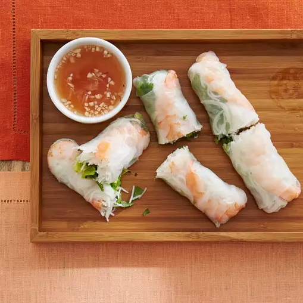

Vietnamese Spring Rolls

Description
These Vietnamese spring rolls are a refreshing change from the usual fried variety and have become a family favorite. They are a great summertime appetizer and delicious dipped in one or both of the sauces.
Prep Time:
45 mins
Cook Time:
5 mins
Total Time:
50 mins
Servings:
8 spring rolls
Ingredients
Spring Rolls:
- 2 ounces rice vermicelli
- 8 rice wrappers (8.5 inch diameter)
- 8 large cooked shrimp - peeled, deveined and cut in half
- 2 leaves lettuce, chopped
- 3 tablespoons chopped fresh mint leaves
- 3 tablespoons chopped fresh cilantro
- 1 ⅓ tablespoons chopped fresh Thai basil
Sauce:
- ¼ cup water
- 2 tablespoons fresh lime juice
- 2 tablespoons white sugar
- 4 teaspoons fish sauce
- 1 clove garlic, minced
- ½ teaspoon garlic chili sauce
- 3 tablespoons hoisin sauce
- 1 teaspoon finely chopped peanuts
Directions
- Fill a large pot with lightly salted water and bring to a rolling boil; stir in vermicelli pasta and return to a boil. Cook pasta uncovered, stirring occasionally, until the pasta is tender yet firm to the bite, 3 to 5 minutes.
- Fill a large bowl with warm water. Dip one wrapper into the hot water for 1 second to soften. Lay wrapper flat; place 2 shrimp halves in a row across the center, add some vermicelli, lettuce, mint, cilantro, and basil, leaving about 2 inches uncovered on each side. Fold uncovered sides inward, then tightly roll the wrapper, beginning at the end with lettuce. Repeat with remaining ingredients.
- For the sauces: Mix water, lime juice, sugar, fish sauce, garlic, and chili sauce in a small bowl until well combined. Mix hoisin sauce and peanuts in a separate small bowl.
- Serve rolled spring rolls with fish sauce and hoisin sauce mixtures.
How to store spring rolls
Because the rice paper wrappers are prone to drying out and cracking, try to eat the spring rolls as soon as you make them. If you have leftovers, wrap each spring roll in storage wrap and store in the fridge for up to three days.
Check out these ingredients, too: